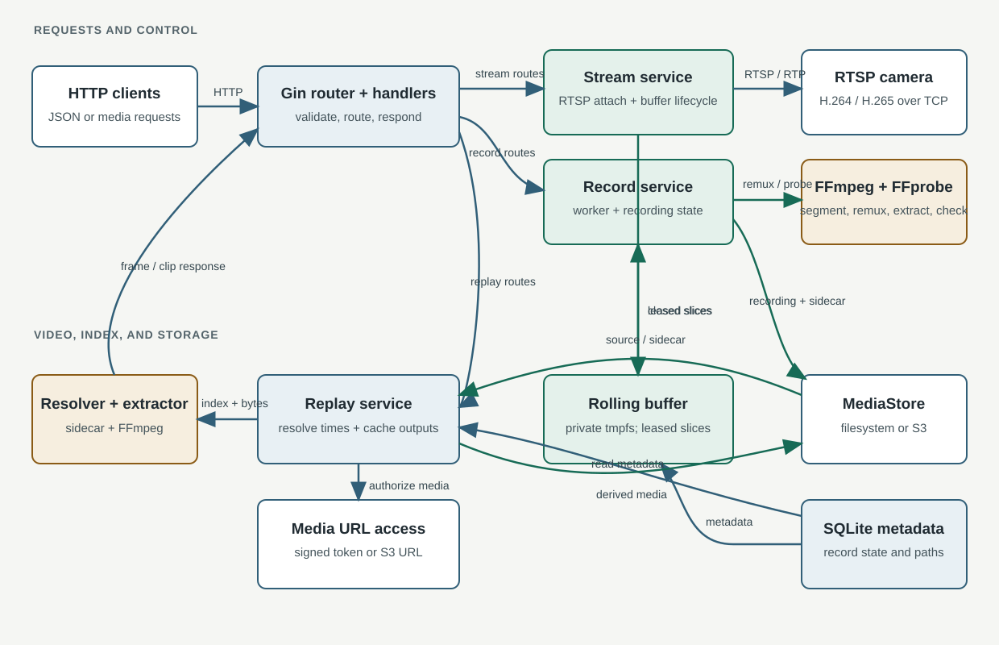
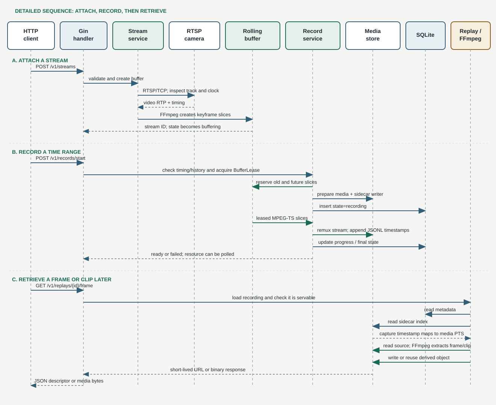

1. What the Service Does
Stream Manager connects to an RTSP camera, keeps a short rolling history of its video, and writes selected time ranges as recordings. A client can later ask for a still frame or a video clip by wall-clock time. The service looks up the requested time in a sidecar index, runs FFmpeg to produce the requested media, stores that result, and returns either the media bytes or a short-lived URL.
The service is an HTTP API, not a camera viewer. It does not discover cameras or provide a user interface. Clients send JSON or query parameters to the API and receive JSON, image bytes, or video bytes.

2. A Small Go Primer for This Project
| Go term | In everyday words | Example here |
|---|---|---|
| Module | The project and its dependency list. | go.mod declares the Stream Manager module and libraries such as Gin, gortsplib, and the AWS SDK. |
| Package | A folder of Go files that work together. | internal/stream owns RTSP attachment and the rolling buffer; internal/replay owns timestamp lookup and extraction. |
| Struct | A named bundle of related data and behavior. | model.Recording carries the recording ID, timestamps, state, path, and metadata. |
| Interface | A list of methods a value promises to provide. It lets code use a behavior without depending on one implementation. | storage.MediaStore is implemented by filesystem and S3 stores; retrieval can use either through the same methods. |
| Method | A function attached to a type. | (*RetrievalService).GetFrame performs the domain work for a frame request. |
error | Go returns errors as ordinary values. Callers check them and decide whether to retry, return an HTTP status, or stop startup. | Handlers translate service errors into stable HTTP error codes instead of returning storage internals. |
context.Context | A request-scoped signal for cancellation and deadlines. | If a client disconnects or startup times out, database, storage, and FFmpeg work can be stopped. |
| Goroutine | A lightweight concurrent task. | Stream ingest and recording workers run while the API continues serving requests; shutdown cancels them and waits. |
One useful way to read a Go request path is: find the route, follow the handler, then follow the service method it calls. The handler is the HTTP translator; the service owns the application rules.
GET /v1/replays/{recording_id}/frame → router.go registers it → handler/retrieval.go validates it → replay/replay.go resolves and extracts media → storage saves or reads it3. Modules and Which Work They Own
| Module | What it does | Place in the whole service |
|---|---|---|
cmd/api-server | Loads settings, opens storage, checks backend health, creates services and routes, starts HTTP, and coordinates graceful shutdown. | The composition root: connects pieces but does not implement recording or replay rules. |
internal/api | Registers Gin routes. handler contains HTTP handlers; common validates IDs, timestamps, filters, and JSON bodies and writes standard errors. | Turns HTTP input into typed service calls and results into JSON or media responses. |
internal/stream | Attaches one RTSP video track, relays packets, asks FFmpeg to split the stream at keyframes, tracks timestamps, and manages a bounded rolling buffer with reader leases. | Provides the short-lived history that makes pre-event recording possible. |
internal/record | Starts fixed-length or manually stopped recording workers. Workers lease buffer slices, write MPEG-TS and a JSONL timing sidecar, probe the result, update metadata, and clean up failures. | Turns temporary buffered video into a managed recording resource. |
internal/replay | Checks recording state, parses and validates JSON or JSONL sidecars, maps capture timestamps to media time, checks clip coverage, extracts media with FFmpeg, caches derived objects, and prepares URLs. | Turns a recording and requested time into a frame or clip. |
internal/storage | Defines metadata/media interfaces and implements SQLite metadata, filesystem media, and S3-compatible media. | Hides persistence technology from stream, record, and replay logic. |
internal/model | Defines recordings, streams, buffer slices, requests, responses, and filters. | Shared vocabulary passed between handlers and services. |
internal/config | Reads environment variables, applies defaults, and rejects unsupported or unsafe combinations. | Provides one validated configuration to startup code. |
internal/logging | Configures JSON or text slog logs, request IDs, access logs, and panic recovery. | Provides request-level diagnostics without changing domain behavior. |
internal/mediaaccess | Signs and verifies expiring HMAC-SHA256 tokens for filesystem media links. | Allows a client holding a valid capability URL to fetch one derived object. |
docs/user-guide, docs/user-guide/api-docs | Human API and setup guidance plus the OpenAPI description used by the docs route. | Explains the API and how operators configure it. |
testdata and package tests | Fixtures and tests for models, validation, storage, sidecars, extraction, stream behavior, and HTTP routes. | Checks individual rules and the assembled service. |
pkg | Currently contains only a small placeholder package. | No exported product API is implemented there today. |
From camera packet to stored recording
- A client calls
POST /v1/streams. The handler checks the sensor ID and RTSP URI. stream.Serviceconnects over RTSP/TCP. The accepted source has one H.264 or H.265 video track; audio is ignored.- FFmpeg creates small MPEG-TS slices around keyframes. The buffer tracks each slice's capture-time and media-time bounds in private tmpfs. Old slices expire unless an active recording lease still needs them.
- A client calls
POST /v1/records/start. The recording service checks that requested history is present and timestamp confidence is acceptable, then leases the slices. - The worker remuxes those slices into a recording, writes a JSONL sidecar index, runs FFprobe to check the output, and stores state and metadata in SQLite.
- A client requests a frame or clip. Replay maps capture time to media time using the sidecar, FFmpeg extracts the result, and the media store keeps the derived file for later requests.
4. What Changed Compared with the Peer Branch
feat/stream-manager-pr and had many uncommitted edits. The diff covered 65 paths (about 8,091 added and 1,959 removed lines), so those totals include the current working-tree changes; they are not a committed-branch-only summary.The peer branch already contains functional stream attachment, rolling buffering, record start/stop, stream and recording routes, and a recording worker. The changes extend and restructure that work; they are not the first implementation of those capabilities.
| Area | Peer branch baseline | Current workspace difference |
|---|---|---|
| HTTP API | Stream and record lifecycle routes were registered under /v1. | Adds health/version and frame/clip retrieval routes, token-based media fetch, richer response negotiation, and broader error mapping. Existing lifecycle routes gain buffer resizing and more complete resource handling. |
| Replay | No comparable replay HTTP flow was wired in the peer router. | Adds sidecar parsing and validation, timestamp-to-media resolution, clip coverage checks, FFmpeg extraction, derived-media reuse, and short-lived URLs. |
| Storage design | Storage was more concentrated in older store/file/GORM files. | Replaces that layout with explicit metadata and media interfaces, filesystem and S3-compatible backends, SQLite metadata, key validation, and shared storage test helpers. |
| Stream and recording safety | Core stream and worker behavior already existed. | Current versions add or strengthen timestamp confidence, development-only best-effort time, bounds on buffer and recording work, recovery of interrupted recordings, secure storage roots and process locks, and careful cancellation and cleanup. |
| Access and operations | Earlier startup and request logging were simpler. | Adds configurable structured request logging, signed media capability tokens, backend startup checks with a deadline, HTTP timeouts and graceful shutdown, environment validation, container/Compose setup, and expanded user/API documentation. |
| Tests | Tests covered the earlier stream and record baseline. | Adds coverage for replay, sidecars, metadata, filesystem/S3 storage, media tokens, API behavior, configuration, and startup/integration behavior. |
File landmarks: startup wiring, current routes, retrieval service, and storage contracts. The linked branch URL is the baseline for this comparison.
5. How the Components Communicate
Inside the process, packages call Go methods through concrete types or interfaces. There is no internal message broker. At the boundaries, the API uses HTTP with JSON requests and responses; media can be returned as binary HTTP bodies. RTSP carries the camera stream, FFmpeg reads and writes media through pipes and files, SQLite stores metadata, and S3-compatible HTTP requests or local filesystem calls store media.

Routes a new user is most likely to follow
| Task | Route | Result |
|---|---|---|
| Check API and version | GET /v1/health, GET /v1/version | JSON status/version. Health means the API process answers; backend health is checked at startup. |
| Attach and inspect a camera | POST /v1/streams, GET /v1/streams, GET /v1/streams/{id} | A stream ID, state, buffer coverage, and timing confidence. |
| Record selected video | POST /v1/records/start, POST /v1/records/stop | A recording resource that moves through recording/finalizing to ready or failed. |
| Manage recordings | GET /v1/records, GET /v1/records/{id}, DELETE /v1/records/{id} | Filtered, paginated metadata or deletion of a non-active recording. |
| Get a frame or clip | GET /v1/replays/{id}/frame, GET /v1/replays/{id}/clip and corresponding /url routes | Binary media when accepted, otherwise a JSON media descriptor. The /url routes always return JSON. |
6. What Is Critical, and What Happens if It Is Missing?
| Part | What it owns | If it is unavailable |
|---|---|---|
| HTTP server and router | Public API boundary. | No clients can attach, record, or retrieve via HTTP. |
| RTSP ingest and rolling buffer | Live source packets and recent history. | No new live streams or recordings; archived retrieval may still work if storage is healthy. |
| Recording service and FFmpeg/FFprobe | Converts buffer slices into validated recordings and indexes. | Recording cannot complete. Existing recordings may still be retrievable, but extraction also requires FFmpeg. |
| SQLite metadata | Recording identity, lifecycle state, and source media key. | Startup fails its health check; the service cannot safely locate or manage recordings. |
| Media store | Source recordings, sidecars, and derived results. | Startup fails its health check; replay cannot read or publish media. |
| Sidecar resolver | Maps capture timestamps to the media clock. | Frame/clip requests fail; the service does not guess timestamps from video alone. |
| Media token signer | Authorizes filesystem media links. | Filesystem mode will not start without the secret. S3 normally returns direct presigned links. |
| Logging and docs | Diagnostics and operator guidance. | Data operations may work, but troubleshooting and correct setup become harder. |
7. Configuration and Settings
Settings are read from environment variables by config.Load. Filesystem storage is the default and is required for live stream and recording routes. S3 is for retrieval of media another producer has published.
| Variable | Default or requirement | Effect / accepted values |
|---|---|---|
STREAM_MANAGER_PORT | 18080 | HTTP listen port; invalid address values fail when the listener starts. |
STREAM_MANAGER_VERSION | 0.1.0 | Free-form version string returned by /v1/version. |
STREAM_MANAGER_LOG_LEVEL | info | debug, info, warn/warning, or error. |
STREAM_MANAGER_LOG_FORMAT | json | json or text. |
STREAM_MANAGER_SQLITE_PATH | /var/lib/stream-manager/stream-manager.db | Absolute path for metadata; used with either media backend. |
STREAM_MANAGER_STORAGE_BACKEND | filesystem | Must be filesystem or s3. Live routes require filesystem mode. |
STREAM_MANAGER_FS_ROOT | Required in filesystem mode | Absolute root for recording and derived media; use persistent storage. |
STREAM_MANAGER_PUBLIC_BASE_URL | Required in filesystem mode | Externally reachable service URL used for media links. |
STREAM_MANAGER_MEDIA_TOKEN_SECRET | Required for filesystem; optional for S3 | Non-empty secret used to sign filesystem media URLs. Replace the Compose development value. |
STREAM_MANAGER_FS_MAX_STAGE_BYTES | 2147483648 (2 GiB) | Positive integer maximum for staging live source media before extraction. |
STREAM_MANAGER_S3_ENDPOINT | Required in S3 mode | Base URL for the S3-compatible service. |
STREAM_MANAGER_S3_REGION | us-east-1 | Region used in S3 request signing. |
STREAM_MANAGER_S3_BUCKET | stream-manager | Existing bucket; the service does not create it. |
STREAM_MANAGER_S3_PREFIX | Empty | Optional key namespace to isolate this service's objects. |
STREAM_MANAGER_S3_USE_PATH_STYLE | true | Boolean; selects /{bucket}/{key} addressing. |
STREAM_MANAGER_S3_ACCESS_KEY and STREAM_MANAGER_S3_SECRET_KEY | Optional; set together | Static credentials. If omitted, use the AWS default credential chain. |
STREAM_MANAGER_S3_SESSION_TOKEN | Empty | Optional token for temporary static credentials. |
STREAM_MANAGER_BUFFER_DIR | /dev/shm/stream-manager | Absolute private tmpfs directory, owned by the service user with mode 0700. |
STREAM_MANAGER_BUFFER_LENGTH | 30s | Go duration from 5s through 300s; default rolling history. |
STREAM_MANAGER_MAX_ACTIVE_RECORDS | 32 | Positive integer limit for simultaneous recording workers. |
STREAM_MANAGER_DEV_BEST_EFFORT_TIMESTAMPS | false | Boolean; development fallback to the service clock when RTCP/NTP mapping is missing. Not suitable for production capture-time claims. |
STREAM_MANAGER_DERIVED_TTL | 15m | Positive Go duration used as the derived-media retention hint. |
STREAM_MANAGER_PRESIGN_EXPIRY | 5m | Positive Go duration for generated media links. |
For Docker Compose, .env.example also defines STREAM_MANAGER_HOST_PORT and STREAM_MANAGER_BUFFER_TMPFS_SIZE. These are Compose substitutions, not settings read by the Go process. Keep the public URL port aligned with the host port.
8. Performance: What Costs Time and Space?
Performance here means how quickly a camera becomes recordable, how long recording and replay extraction take, how many streams and recordings fit on the host, and how much temporary or persistent storage they consume. The service does not claim to improve video quality or inference accuracy.
- RTSP and segmentation: camera bitrate and keyframe spacing affect network use and when buffer slices become available. Ingest copies encoded video instead of re-encoding it.
- Rolling buffer: each stream uses tmpfs. Longer windows and higher bitrates consume more memory-backed storage. Active leases keep needed slices from expiring.
- Recording: workers copy encoded video into MPEG-TS and write sidecar entries.
STREAM_MANAGER_MAX_ACTIVE_RECORDScaps concurrent workers. - Replay: FFmpeg stages source media to a seekable temporary file. Clip extraction re-encodes for accurate boundaries and costs more CPU than a simple copy. Repeated requests for the same resolved time and format can reuse a derived object.
- Storage: SQLite uses one writer connection and WAL for small metadata rows; filesystem or S3 carries the larger media objects.
- Limits: live source staging defaults to 2 GiB. Derived objects have a retention hint and returned URLs expire; actual cleanup depends on backend behavior and lifecycle configuration.
9. Caveats and Edge Cases
- Only RTSP/RTSPS over TCP with one H.264 or H.265 video track is supported. Audio is discarded; URLs containing credentials are rejected.
- Production timing depends on camera RTCP/NTP mapping. Best-effort mode uses the service host clock and is explicitly a development option.
- The rolling buffer is temporary. A restart loses attached streams and unrecorded history. Startup finds active recordings left in SQLite, marks them failed, and removes partial media.
- Timestamp lookup requires a valid sidecar. Capture wall-clock time and media PTS/timescale are kept separate. Invalid, duplicated, unordered, or mismatched index data is rejected.
- Live recording indexes are keyframe/slice based, so frame lookup has keyframe-level timing rather than an entry for every decoded frame. Live clips need a complete sample after their requested end boundary.
- Clip output is MP4; frame output is JPEG or PNG. FFmpeg must be available on
PATH; recording also needs FFprobe. - The API has no general user authentication or authorization. A filesystem media URL is a short-lived bearer capability: anyone who gets it can fetch that derived object until it expires.
/v1/healthmeans the API answered. SQLite and media backends are checked at startup, not on every health request.- Use one process per SQLite database path and filesystem media root. File locks reject another process using the same locations.
- The current README mentions
compose.dev.yamlfor SeaweedFS, but that file is absent from the inspected component tree. The checked-incompose.yamlconfigures filesystem mode. - Structured access/error logs exist, but no metrics or tracing package is wired into the request/retrieval path.
10. Build Process
- Install Go 1.26 or later. Install FFmpeg; FFprobe is needed to validate recordings.
- From
microservices/stream-manager, download dependencies usinggo mod download. - Compile with
CGO_ENABLED=0 go build ./.... - Run package and integration tests with
go test ./.... Tests that need optional external media services can skip when those services are unavailable.
cd microservices/stream-manager
go mod download
CGO_ENABLED=0 go build ./...
go test ./...go.mod lists Gin for HTTP routing, gortsplib and RTP/media libraries for RTSP, AWS SDK v2 for S3, GORM with a pure-Go SQLite driver for metadata, and supporting libraries for IDs, system calls, and Swagger docs. The Dockerfile builds a static Linux binary in a Go 1.26 stage, then uses a slim Debian runtime with certificates and FFmpeg.
There is no component Makefile in the inspected tree. The documented build and test commands are direct Go commands.
11. Deployment Process
Docker Compose: local filesystem mode
- Copy
.env.exampleto.env. - Replace
STREAM_MANAGER_MEDIA_TOKEN_SECRETwith a unique secret if the service is reachable by anyone else. - Run
docker compose up --build -d, then checkhttp://localhost:18080/v1/health. - Run
docker compose downto stop it. The named volume keeps SQLite and media; tmpfs buffer data disappears when the container stops.
The container runs as unprivileged UID/GID 10001. Compose mounts persistent data under /var/lib/stream-manager and private tmpfs at /dev/shm/stream-manager (256 MiB by default, configurable with STREAM_MANAGER_BUFFER_TMPFS_SIZE). Ensure the camera is reachable from the container network.
Direct host run
Set the required filesystem variables, create persistent database/media directories owned by the service account, provision private tmpfs, and run go run ./cmd/api-server from the component directory. The Get Started guide has an end-to-end example.
S3 retrieval deployment
Set STREAM_MANAGER_STORAGE_BACKEND=s3, the endpoint, and an existing bucket. Supply a paired access/secret key or make the AWS default credential chain available. The bucket must contain the expected recording and sidecar objects. S3 mode supports replay retrieval; live stream and recording endpoints return unavailable because live writes require filesystem media support.
The component has a Dockerfile and Compose deployment, but no Helm chart in the inspected directory. Run one active instance per local SQLite/media root.
12. A Practical Reading Order
- Start with
cmd/api-server/main.goto see how everything is assembled. - Read
internal/api/router.goand one handler to see how HTTP reaches code. - Follow
internal/streamfor live input, theninternal/recordfor recording lifecycle. - Follow
internal/replayfor timestamp lookup and extraction. - Finish with interfaces in
internal/storageanddocs/user-guide/get-started.md.
To check the current code locally, run cd microservices/stream-manager && go test ./.... The full Go suite passed while this walkthrough was prepared.